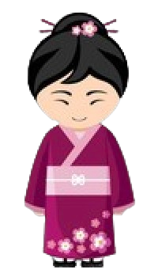

5 TRADITIONAL
ASIAN DRESSES
With Asia's diverse cultures, each country has its own well-known clothing. These have evolved throughout the centuries, but they reflect tradition nonetheless. Here are five commonly known womens' traditional dresses from our continent, alphabetized by country.
| image | profile | description |
|---|---|---|
| Name: Qipao (旗袍) Country: China |
Also known as the cheongsam in Cantonese, the qipao was first "loosely fitted on one's body and would be covered to the toes." Modifications came with the end of the Qing Dynasty, the Western influence, and the introduction of new materials in the 1930s. It was even banned in China after the Communist Revolution but thankfully continued because tailors were able to flee to Hong Kong. |
|
|  | Name: Kimono (着物 きもの) Country: Japan |
"Kimono" was once the Japanese word for clothing in general, however, it is now used to refer to traditional clothing. The one in the photo (or the one we know of) was first worn in the Heian period (794-1185). During this time, fashion depended on social status—the color of the clothes and the quality of fabric was different from a noble to a commoner. Nowadays, kimonos are mainly worn for ceremonies as "haregi" (formal clothing), rarely in everyday life. |
| Name: Hanbok (한복) Country: South Korea |
According to The Culture Trip, hanbok is based on what was established during the Three Kingdoms of Korea: jeogori (jacket), baji (trousers), and chima (skirt). Unlike the previous two, the design remains relatively unchanged until now. It has a lot of classifications too such as everyday use or ceremonial use or for gender, age, and season. It's also centered around the Confucian dress code which emphasizes the use of primary colors. |
|
| Name: Baro't Saya Country: Philippines |
We know the Filipina to be "mahinhin" and graceful, a perfect fit for our traditional dress or the Baro't Saya. Its name means "blouse and skirt"; these are the main pieces that make up the garment. Aside from those, there is a scarf draped over the shoulders and secured as well as an overskirt. Fiber is usually the fabric for one, and since it's lightweight, it's perfect for our country's weather. However, it's also sort of stiff which gives the dress its shape. |
|
| Name: Áo dài Country: Vietnam |
If you've seen Miss Saigon, you've seen an áo dài as this is the dress Kim wears. Its history dates back to when Vietnam was divided into two territories in the 18th century. It once had five parts but was simplified into two as contemporary styles took over. Now, the áo dài is reserved for special occassions, but it is required to be worn by female highschool students at least once a week—this inspired many Vietnamese art like songs or paintings. |